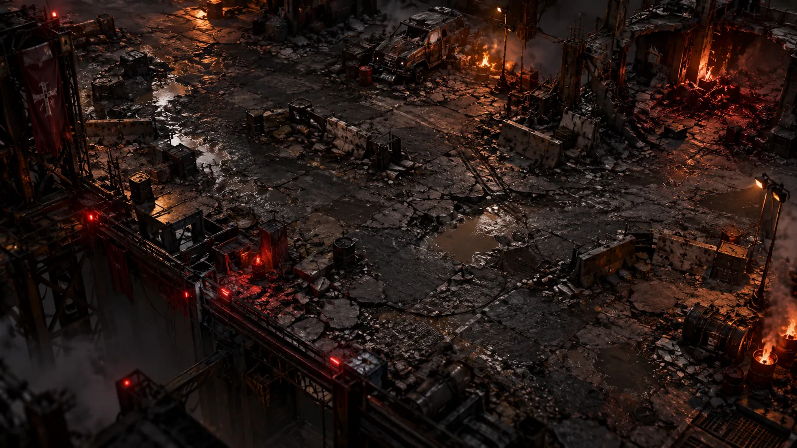

TRILHA SONORA · ESTUDO I
Terras das
Cinzas
O mundo caiu.
As cinzas ainda têm voz.
Atmosfera sombria, metal e um pulso que cresce entre as ruínas. Ouça a primeira proposta para a identidade sonora do ASHFALL.
EM AVALIAÇÃOUma ideia para o som do nosso mundo.
Ainda não integrada ao jogo.
PRÉVIA SONORA01 / ESTUDO ORIGINAL
Ouça as Terras
das Cinzas.
Uma composição instrumental original.
- DURAÇÃO
- 1min31
- RITMO
- 84 BPM
- CLIMA
- Sombrio
PRONTO PARA OUVIR
Aperte o play para ouvir a prévia.
O player não abriu? Ouça o arquivo direto ↗
O primeiro passo de uma identidade sonora.
A JORNADA DA FAIXA
Do silêncio à tensão.
A atmosfera muda ao longo do estudo.
Acompanhe os quatro momentos.
As ruínas respiram
Texturas sombrias e notas graves dão forma ao ambiente.
O pulso desperta
A percussão industrial se firma entre as camadas de som.
A tensão toma conta
A melodia metálica e o ritmo chegam ao trecho mais intenso.
Restam as cinzas
A percussão recua. O ambiente conduz o encerramento.